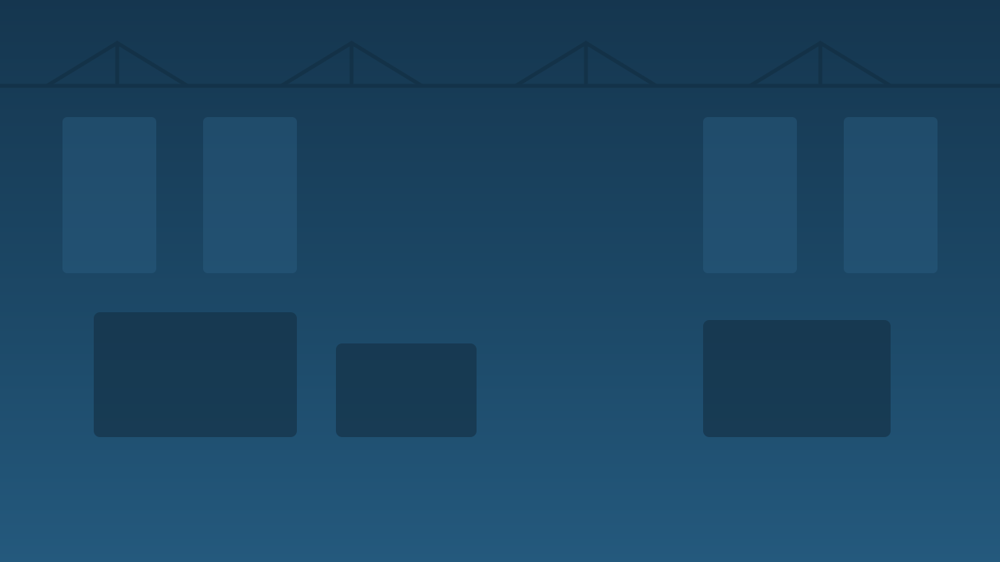
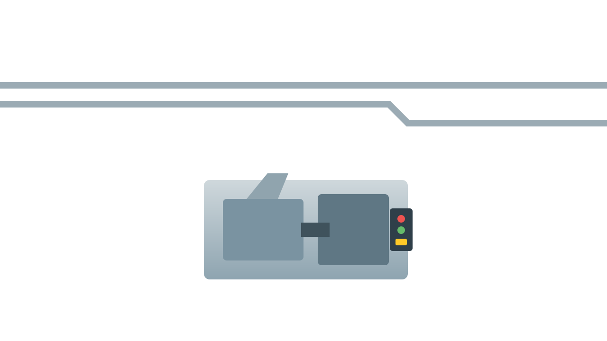
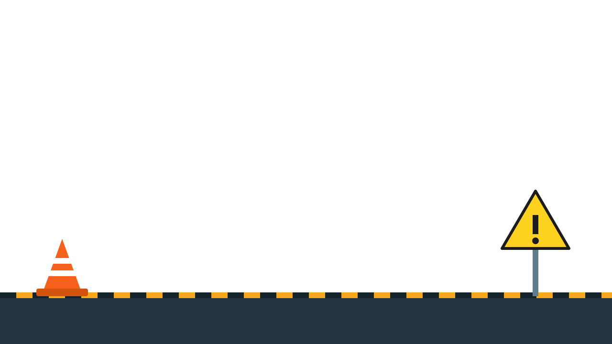
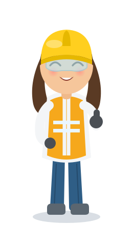

Capacitación en Seguridad y Salud en el Trabajo
para la planta de inyección Menshen.

Usa Anterior y Siguiente para moverte.
En las dinámicas, arrastra y haz clic donde se indique.
La seguridad de la planta depende de ti.
Proteger tu salud frente a los peligros de la planta: máquinas, calor, ruido y químicos.
Identificar y reportar a tiempo condiciones y actos inseguros.
Crear una cultura de prevención y autocuidado en el equipo.
La Seguridad y Salud en el Trabajo busca prevenir lesiones y enfermedades causadas por el trabajo, y proteger la salud de todos.
Accidente de trabajo: suceso repentino que produce una lesión o perturbación.
Incidente: evento que no causó lesión pero pudo hacerlo (casi-accidente).
Reportar los incidentes evita que se conviertan en accidentes.
Haz clic en cada riesgo para conocerlo (debes verlos todos).
Un accidente puede originarse en distintos factores de la operación:
La máquina
El material
El entorno
El método
La persona
Arrastra cada riesgo hacia su definición correcta (debes colocar los 4).
Quemaduras por plástico fundido y resistencias a más de 200 °C.
Atrapamiento o aplastamiento por partes móviles del molde.
Inhalación de vapores de polímeros, aditivos y desmoldantes.
Pérdida auditiva por ruido continuo mayor a 85 dB.
Tu EPP es tu primera línea de defensa.
Casco
Gafas
Guantes térmicos
Protección auditiva
Botas de seguridad
Respirador
Arrastra cada EPP a la parte correcta del cuerpo (debes colocar los 4).
¿Qué EPP usas para manipular piezas calientes?
Antes de iniciar el turno en la inyectora, verifica:
El cañón y el molde superan los 200 °C. Una salpicadura de material fundido causa quemaduras graves.
Las inyectoras y compresores generan ruido continuo. Por encima de 85 dB puede causar pérdida auditiva permanente.
En zonas con ruido mayor a 85 dB debes:
Antes de mantenimiento, limpieza o despeje de atascos:
Para controlar un riesgo, prioriza en este orden:
Antes de despejar un atasco en el molde, lo correcto es:
Incendio: da la alarma, usa el extintor adecuado y evacúa por la ruta señalizada.
Quemadura: enfría con agua, no apliques cremas, cubre con material limpio y acude a enfermería.
Reporta: todo incidente o condición insegura al supervisor de inmediato.
Reportar a tiempo evita accidentes. Puedes hacerlo:
Con el formato de reporte de acto o condición insegura.
Directamente a tu líder de proceso o supervisor.
Al responsable de SST de la planta.
Si detectas una condición insegura, debes:
El autocuidado es tu compromiso diario: usar el EPP, respetar las guardas, no tomar atajos y cuidar a tus compañeros.
¿Cuál es el control MÁS efectivo frente a un riesgo?
Pulsa Jugar y usa Espacio o clic para saltar. Cada peligro muestra su nombre. Esquiva 8 para ganar.
Mueve a Karen con las flechas o el mouse. Atrapa 10 EPP y evita los peligros (🔥🔪⚡).